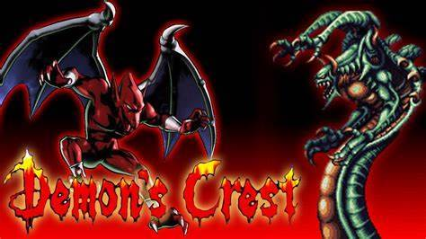
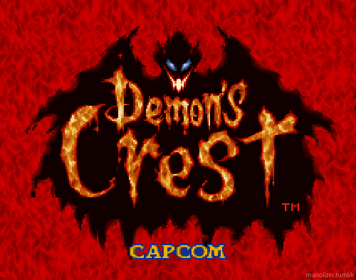
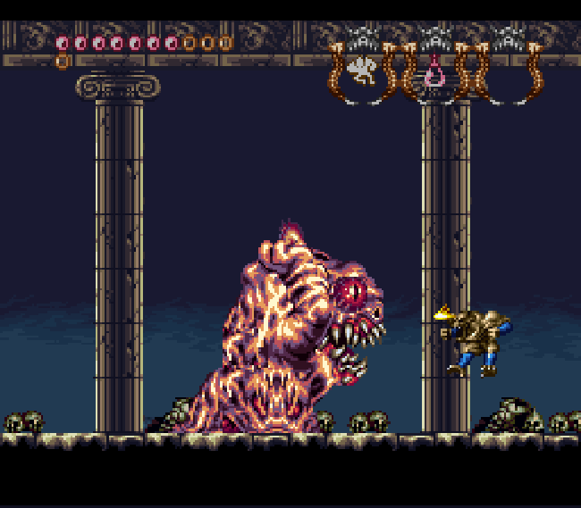
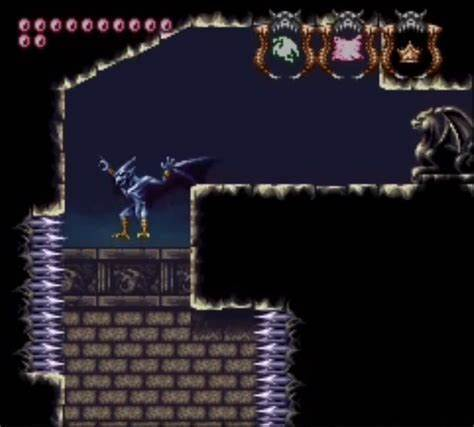
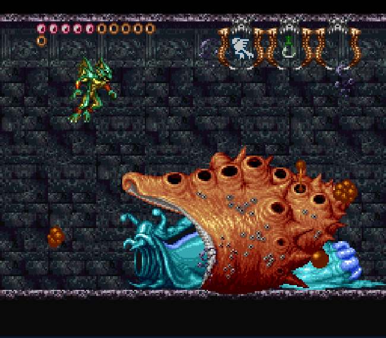
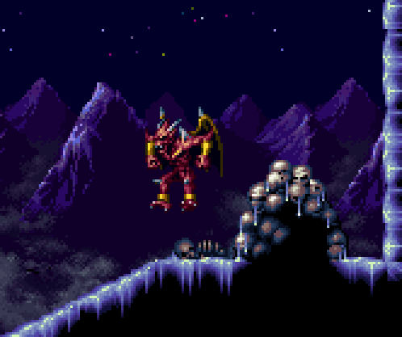

Demon Crest
História
Tudo começa quando, inexplicavelmente, 6 emblemas mágicos (guardados pelos humanos) são de alguma maneira teleportados para o reino demônio. Cada um está relacionado a um elemento: água, terra, fogo, ar, tempo e paraíso. No mundo do jogo há o mito de que a pessoa que conseguir coletar e unir todos os emblemas obterá o Emblema do Infinito, que concede um poder ilimitado à mesma.
Todos os demônios logo começam uma implacável busca atrás dos emblemas e logo o mundo demônio entra em guerra civil. Durante a busca do mais cobiçado, o Emblema do Paraíso, Firebrand em um momento de descuido foi gravemente ferido pelo dragão demônio. Phalanx, um grande inimigo de Firebrand, se aproveitou do momento de fraqueza do personagem principal e roubou quase todos os emblemas que o mesmo havia coletado até o momento.

Pedra da Terra
Condece disparos mais poderosos e uma investida potente, capaz de mover estátuas com facilidade.

Pedra do Ar
Faz com que o Firebrand consiga voar grandes altittudes, além disso permite que ele realize golpes cortantes.

Pedra da Água
Com ela, você pode finalmente mergulhar debaixo d'água sem morrer e melhora o dano macivo do tiro,
podendo destruir paredes submersas.

Pedra do Tempo
Dentre todas as pedras essa é a mais poderosa, amplia e muito a sua vida como se foce aço e permite que você exerça um estrondoso tiro que drena quase por completo, tudo aquilo que toca.
